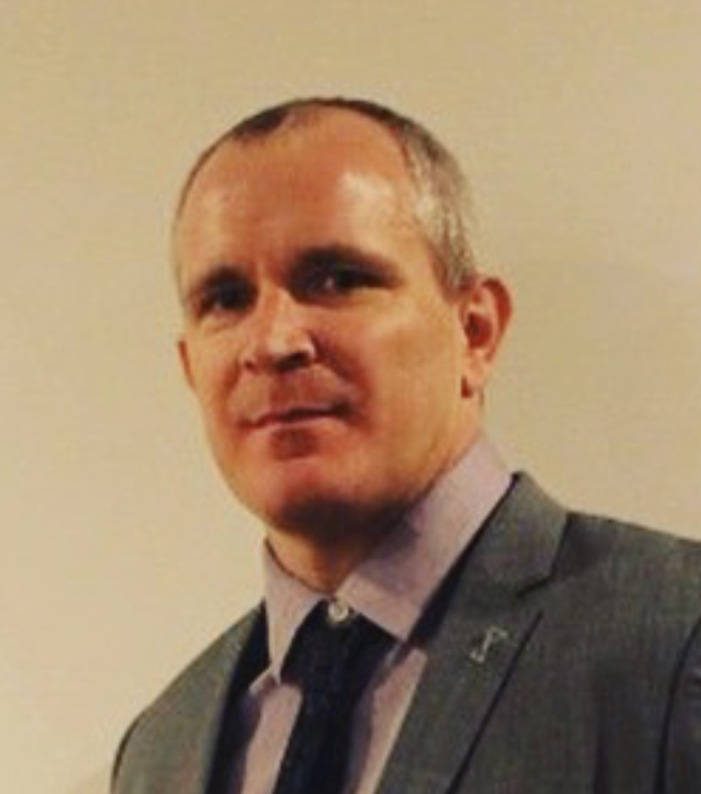

La Gestión de proyectos afronta inconvenientes en lo que respecta sobre costos e incumplimientos en los plazos establecidos, lo que se entiende como desperdicios que se pueden evitar mediante la utilización de LEAN. Esta se basa en dos conceptos principales: "Agregar Valor al Cliente" y "La Cero Tolerancia con los Desperdicios".
El enfoque será explicar como PMPs, a través de 7 pasos, pueden realizar eventos Kaizen para solucionar problemas, identificar y eliminar los 8 tipos de desperdicio y los pasos que no agregan valor.
Esta charla le ayudará a desarrollar las habilidades para resolver problemas, aumentar la calidad de los productos y servicios, reducción de costos y la entrega de valor al cliente.
Expositor: 
Timothy Ewing
Más de 20 años de experiencia en gestión progresiva liderando equipos de operaciones en diversos entornos, incluidos 8 años de experiencia internacional en LATAM.
Ha trabajado para empresas tal como Sony Electronics of America, Sysco Foods Coporation y el ejército de los EE.UU.
Desde 2009, ha estado trabajando con más de 30 empresas, donde ha realizado más de 20 eventos de Kaizen y DMAIC, ayudando empresas a lograr y superar sus metas. Ha capacitado a más de 800 estudiantes y profesionales en Lean Six Sigma.